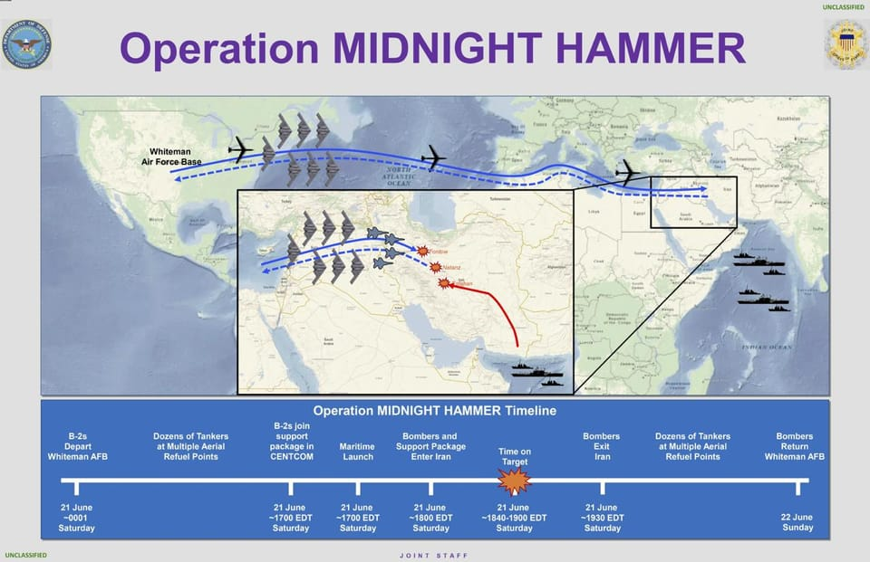

世界苦茶06月23日新闻 | 25条 | 伊朗议会通过封锁霍尔姆斯海峡

伊朗议会通过封锁霍尔姆斯海峡 | 伊朗称福尔多伊斯法罕设施未能摧毁 | 特斯拉Robotaxi低调首秀 | 北约国家同意GDP5%投入国防
每天三件事
苦茶数据
美元兑人民币：7.18（昨日7.18，前日7.17）
美元兑日元：146.67（昨日145.92，前日145.24）
上证指数：3365（昨日3359，前日3364）
标普500指数：休市（昨日5967，前日5980）
比特币：101253（昨日102455，前日103517）
布伦特原油：78.15（昨日77.01，前日76.97）
以伊战争
• 美详解“午夜之锤”行动 ：美军参谋长联席会议主席丹·凯恩6月22日提供了名为“午夜之锤”的行动细节。B-2轰炸机于美东时间20日半夜从美国起飞，部分轰炸机向西飞越太平洋实施佯动，7架B-2轰炸机作为主力打击机群向东经18小时进入伊朗领空，其间保持无线电静默，并完成多次空中加油。在7架B-2轰炸机进入伊朗领空前，一艘美军潜艇向伊斯法罕核设施所在区域地面目标发射逾20枚战斧导弹；B-2轰炸机进入伊朗空域后，美军同步实施多层次欺骗，其间第四代战机和第五代战机作为“诱饵”提供先导护航，应对伊朗导弹威胁，不过未遭遇任何伊朗火力拦截。7架B-2轰炸机在福尔道和纳坦兹核设施共投下14枚钻地弹；对伊斯法罕核设施，美军发射了战斧导弹。完成打击后，7架B-2轰炸机安全撤离伊朗空域。凯恩说：“伊朗战机没有出动，其防空系统似乎也未发现我方行踪。”美军出动了超过125架战机参与打击行动，发射约75枚精确制导导弹。代表福尔道附近圣城库姆的议员称，福尔道核设施未受到严重破坏，大部分受影响的区域均在地面上，可完全恢复。伊朗Press电视台主播称，空袭仅破坏了福尔道的出入口隧道。美国国防部长赫格塞思表示，袭击达到了预期效果，美国认为摧毁了福尔道核设施的能力，但袭击的全面影响仍在评估。凯恩也表示现阶段无法回答伊朗是否仍保有核能力。伊朗继续打击以色列，其间首次使用“城堡破坏者”多弹头弹道导弹。袭击已造成至少16人受伤。以色列袭击伊朗西南部城市布什尔，当地有着伊朗唯一仍在运营的核电站。此外，以色列还袭击了伊斯法罕、阿瓦士和亚兹德等地。美国国务卿鲁比奥呼吁伊朗与美国直接谈判，他重申伊朗可进行民用核计划，但不能从事铀浓缩活动。美国副总统万斯受访时表示对中东旷日持久的冲突不感兴趣，但相信需要通过实力实现和平。伊朗总统佩泽希齐扬表示，美国袭击行径表明，美国是以色列针对伊朗敌对行径的幕后主使。伊朗外长阿拉格齐说，伊朗目前还未决定是否关闭外交对话大门，需对此次袭击造成的损失进行评估后作出决定。也门胡塞武装谴责美国对伊朗的军事行动，将重新开始袭击美国在红海的船只。
• 美军空袭引发中俄谴责 ：美军空袭伊朗三处核设施后，中国和俄罗斯星期天双双发声谴责，北京指美国此举加剧中东紧张局势，莫斯科则批评美国总统特朗普“发动了一场新战争”。伊朗掌控中东石油出口要道霍尔木兹海峡，也邻近巴基斯坦战略要地瓜达尔港，一旦实施报复封锁霍尔木兹海峡，可能连带冲击中国能源供应和“一带一路”倡议。但受访学者评估，目前德黑兰既无能力实施封锁，也不会贸然出此下策与世界为敌，以免外交上被进一步孤立。特朗普美东时间星期六晚发表全国讲话，宣布美军空袭伊朗三处核设施后，俄罗斯安全委员会副主席梅德韦杰夫星期天在社媒平台Telegram上发文，批评特朗普以和平缔造者之姿就任总统，“却为美国发动了一场新战争”。
• 内坦亚胡称接近目标 ：以色列总理内坦亚胡说，以色列已非常接近实现消除伊朗弹道导弹和核计划双重威胁的目标。路透社报道，内坦亚胡星期天承诺，不会让以色列卷入消耗战，但他也强调，不会过早结束针对伊朗的行动。内坦亚胡当天告诉以色列媒体，“我们不会采取超出实现目标所需范围的行动，但我们也不会太早结束行动。当我们达成目标、完成任务时，战斗就会停止。” （翻评：这是以色列说明不以伊朗政权更迭作为目标。）
• 特朗普威胁扩大攻势 ：美国总统特朗普宣布，美军对伊朗的袭击行动“非常成功”，已彻底摧毁伊朗三处核设施；他警告伊朗，现在必须同意结束战争，否则将对德黑兰发动更大规模攻击。观察家认为，伊朗不会屈服于美国的威吓，却更可能转而攻击美国在中东的军事基地与设施，予以还击。特朗普于美东时间星期六晚上10时在白宫发表全国讲话，宣布美国刚刚彻底清除了伊朗的关键核设施，目标是摧毁伊朗核能力。
• 伊斯法罕核隧道被毁 ：联合国国际原子能机构确认，伊朗伊斯法罕核设施用于储存部分浓缩铀库存的隧道入口，在美军夜间袭击行动中受到破坏。路透社报道，国际原子能机构星期天发表声明说：“我们已确定，伊斯法罕核设施地下隧道的入口被毁。”一些官员此前指伊朗大部分高浓缩铀都储存在伊斯法罕核设施地下。国际原子能机构总干事格罗西随后向联合国安理会提交的一份声明，似乎证实被击中的隧道是用于储存浓缩铀区域的一部分。 （翻评：似乎需要对伊斯法罕进行地下设施进行一次打击。）
• 联合国将开会讨论空袭 ：联合国安全理事会将召开紧急会议，讨论美国对伊朗核设施的袭击。路透社报道，联合国的外交官称，应伊朗方面要求，联合国安理会将于星期天晚些时候召开会议。美军当天早些时候向伊朗三处核设施发射大规模掩体炸弹，伊朗常驻联合国代表伊拉瓦尼随后致函安理会，要求就这一情况召开紧急会议，并促请安理会用最强烈措辞，谴责美国的袭击行为。
• 伊朗总统指美为幕后黑手 ：伊朗总统佩泽希齐扬谴责美国对伊朗核设施的袭击，并称华盛顿是以色列在伊朗军事行动的幕后黑手。法新社报道，佩泽希齐扬星期天晚些时候首次对美军的军事行动发表回应。他说：“此次侵略表明，美国是犹太复国主义政权对伊朗伊斯兰共和国采取敌对行动的主要因素。”他也表明，美国是在看到以色列“明显无能为力”后，才采取行动。
• 伊朗拟封锁霍尔木兹海峡 ：伊朗媒体报道，伊朗国会已批准封锁重要石油贸易航道霍尔木兹海峡的措施，最高国家安全委员会须就此作出最终决定。路透社引述伊朗新闻电视台星期天的报道，伊朗国会已经批准封锁霍尔木兹海峡，但伊朗尚未正式决定封锁海峡。封锁霍尔木兹海峡的决定尚未最终确定，也没有官方报道指国会已通过相关法案。
• 叙利亚教堂遭自杀袭击 ：叙利亚首都大马士革一东正教教堂6月22日发生自杀式袭击，造成至少22人死亡、63人受伤。内政部门说，“伊斯兰国”恐怖分子闯入教堂，开枪射击后引爆身上的炸弹。安全人员已封锁现场并展开调查。教堂的牧师说，袭击发生在周日祈祷期间，当时教堂内有近400人，他先是听到教堂外传出枪声，随后两名袭击者从教堂正门闯入，向教堂内开枪后引爆了身上的炸弹。另一名目击者称，两名袭击者在行凶期间高呼“宗派口号”。
• 美国外交人员撤离伊拉克 ：美军空袭伊朗主要核设施后，美国官员证实，已有更多外交人员于周末从伊拉克撤离，原因是“出于对区域紧张局势的持续担忧”。法新社报道，这名官员星期天说：“作为我们持续简化运作的一部分，6月21日和22日又有部分人员离开伊拉克。”他指出，此次行动是上周开始的一系列撤离安排的延续，“出于高度谨慎原则，亦因区域局势持续升温”。
中国新闻
• 中国迈向能源独立 ：俄罗斯石油公司首席执行官谢钦说，中国正寻求完全的能源独立，在可预见的未来可能成为主要的能源出口国。谢钦星期六在圣彼得堡国际经济论坛上说，中国占全球能源领域投资的三分之一，正大力提升再生能源产能，目前已成为核电领域的领先者之一。谢钦也说，中国已经确保了能源安全，并正充满信心地迈向完全的能源独立的方向，在自身资源的基础上建立稳定的能源平衡。
• 王小洪强调科技攻关 ：中共中央书记处书记、国务委员王小洪在浙江调研时说，要加强关键核心技术和前沿技术攻关，以及加强海外利益保护，更好促进外贸稳定增长和对外开放。据新华社报道，王小洪过去周末在浙江调研经济社会高质量发展情况。他先后到杭州市、宁波市参访有关企业、港口和公安基层单位，以了解生产经营、技术研发、成果转化、对外贸易和加强基层社会治理、维护安全稳定等情况。王小洪强调，要加快实施创新驱动发展战略，加强关键核心技术和前沿技术攻关，持续推进“人工智能+”行动，推动科技创新和产业创新深度融合，加大对创新主体、创新成果等保护力度，落实对新技术、新业态的包容审慎监管，更好发挥科技创新策源功能。 （翻评：大家可能不知道王小洪的分工是什么，他是公安部部长，不知道还以为他是总理或科技部部长。）
• 27条河流发生洪水 ：受降雨影响，中国全国27条河流发生超警以上洪水。据中国官媒央视新闻报道，星期六早8时至星期天早8时，广西柳江干流及支流方村河、贵州沅江支流巴拉河、云南右江支流旧莫河及澜沧江支流勐统河等27条河流发生超警以上洪水。其中，最大超警幅度达3.71米。报道指，广西方村河、贵州柳江上游都柳江及巴拉河、云南旧莫河等四条中小河流都超过保证水位0.01米至2.51米，云南勐统河发生1979年以来最大洪水。此外，江苏里下河地区新增八站水位都超过警戒水位0.02米至0.51米。
• 中国船连日巡钓鱼岛海域 ：日本海上保安厅称，星期天发现中国公务船在主权争议岛礁附近航行，并称这是连续第216天确认到中国船只在该海域航行，刷新连续航行天数历史纪录。综合日本共同社和法新社报道，日本海上保安厅的巡逻船星期天发现四艘中国海警局的船只在尖阁诸岛周边的毗连区航行。报道指，这是日方连续第216天在该海域确认到中国公务船，刷新了日本政府自2012年9月来将尖阁诸岛“国有化”后，最长的连续天数纪录。
• 宣扬西方伪史账号被封 ：中国互联网上一批宣扬“西方伪史论”的自媒体账号，据报集体被封。经查证，微信账号“生民无疆”和“文行先生”的主页上，均显示“接相关投诉，违反《互联网用户公众账号信息服务管理规定》，已被屏蔽所有内容，账号已被停止使用”。抖音自媒体“北极观物”主页也显示，“由于违反《抖音社区自律公约》的相关规定，该账号已被封禁”。另据网上流传的消息，“昆羽继圣”“朱恪远”等自媒体博主在社媒平台的账号，也出现被禁言的情况。这批账号大约是在6月17日集体被封禁。
• 加拿大称网络设备遭与中国有关黑客攻击： 加拿大网络安全机构表示，近期针对加拿大电信基础设施的恶意活动很可能是由中国支持的黑客所为，并警告称，一家加拿大公司注册的三台网络设备在攻击中遭到入侵。加拿大网络安全中心和美国联邦调查局在周五晚些时候发布的公告中敦促加拿大各机构采取措施，加强网络安全，以抵御与中国政府有关联的 “盐台风” 组织构成的威胁。该中心表示：“网络中心注意到目前针对加拿大电信公司的恶意网络活动，几乎可以肯定，责任方是中华人民共和国国家支持的行为者，特别是‘盐台风’。”其他调查显示与 “盐台风” 组织一致的恶意迹象存在重叠，这表明此次网络攻击“不仅仅局限于电信领域”。
亚太印太新闻
• 新航取消飞迪拜航班 ：鉴于对中东地缘政治局势的安全评估，新加坡航空公司取消两趟星期天往返我国和迪拜的航班。新航星期天下午3时在网站发布通知说，已取消原定当天下午3时10分从我国飞往阿联酋迪拜的SQ494航班，以及当地时间傍晚7时45分从迪拜前往新加坡的SQ495航班。新航将联系所有受影响的乘客，告知他们航班取消。这些乘客会被重新安排到其他航班，也可以针对未使用的机票行程，要求全额退款。
• 日本人因米价高转吃面 ：受大米价格飙升影响，对价格敏感的日本消费者已开始减少吃米饭；为了缓解经营压力，不少连锁餐厅与食品企业也纷纷调整产品结构，转向销售成本较低的面食产品。共同社报道，日本农林水产省数据显示，自去年以来，日本的大米价格已翻倍上涨，至今仍维持在高位。涨势最初由天气不佳导致的减产引发，尽管政府已动用国家储备稳定供应，但截至6月8日当周，5公斤大米的平均零售价仍高达4176日元。东京连锁餐饮公司Antworks以销售“传说的猪排饭”闻名，但在今年5月，公司开设了首家拉面专门店，并计划在明年2月前增设三家拉面门店。公司发言人称，大米价格较数年前上涨超过两倍，若继续单一依赖盖饭主力商品，未来经营前景将更加严峻。
科技新闻
• 特斯拉Robotaxi低调首秀 ：美国电动车巨头特斯拉备受期待的无人驾驶电动车（Robotaxi）于美东时间星期天在美国得克萨斯州奥斯汀登场。不过初期仅投入约10辆车，与特斯拉首席执行官马斯克长期承诺的具备广泛能力的自动驾驶汽车相去甚远。分析认为，这一首秀不仅显得颇为低调，也暴露出特斯拉在自动驾驶技术上面临的多重挑战。据报道，服务初期只采用Model Y车型，而非造型极具未来感的CyberCab。这项服务还将受到其他限制，特斯拉计划避开恶劣天气和路口，并且不接受18岁以下的乘客。
财经新闻
• 地方债清偿企业欠款 ：湖南和云南等部分中国省份开始利用专项债券募集资金，用于偿还拖欠企业的账款。综合《南华早报》、第一财经等媒体报道，湖南是中国首个明确使用地方专项债解决拖欠企业账款的省份。湖南省人大常委会5月29日批准的2025年省级预算调整方案中，今年获批新增的1465亿元人民币专项债里，有200亿元用于解决拖欠企业账款。云南省上周也调整全年新增955亿元专项债额度的投向，将用于项目建设的额度从年初的500亿元腰斩至230亿元；拨出356亿元用于解决政府拖欠企业账款；并将年初用于补充政府性基金财力的200亿元增至369亿元，支持各地统筹用于隐性债务化解、部分存量项目建设和解决拖欠企业账款。
• 美联储沃勒称鉴于近期通胀数据温和，应考虑在7月降息 ：美联储理事沃勒表示，鉴于近期通胀数据温和以及关税带来的价格冲击将是短暂的，应该考虑在下次会议上降息。他表示：“我认为任何关税引发的通胀都不会那么严重，我们应该在制定政策时忽略它。过去几个月的数据显示，趋势通胀看起来相当不错……我们最早可能在7月采取行动。”旧金山联储总裁戴利表示，美国经济基本面正转向可能需要降息的情况，但她暗示7月可能为时过早，认为秋季降息可能更为合适。
• 美国计划取消台积电等芯片厂在华使用美国技术的授权 ：知情人士透露，美国商务部正考虑撤销近年来给予三星、SK海力士和台积电等全球芯片制造商在华使用美国技术的授权。美商务部发言人表示：“芯片制造商仍可在中国运营。针对芯片的新执法机制与适用于向中国出口的其他半导体公司的许可要求类似，并确保美国有一个平等互惠的程序。”
俄乌战争
• 乌军扩大反击行动 ：乌克兰陆军总司令瑟尔斯基称，乌克兰对俄罗斯的打击已奏效，接下来会继续加强对俄罗斯攻击行动的规模和深度。瑟尔斯基在星期天的公开讲话中强调，乌克兰只会攻击军事目标，并说，这已被证明是有效的。他说：“当然，我们会继续。我们将扩大规模和深度。”
• 乌克兰与德国的贸易额增长，首次超过俄罗斯： 乌克兰已超过俄罗斯成为德国的2024年贸易伙伴，这标志着地缘政治变化背景下经济重组的一个里程碑。据乌克兰驻柏林大使馆6月21日公布的数据，去年德国与乌克兰的双边贸易额达到8.4亿欧元，而与俄罗斯的贸易额则下降至7.7亿欧元。这是自1992年以来乌克兰首次在德国东欧伙伴国中位居第一。大使馆强调，2023年9月，乌克兰与德国的月度贸易额一度超过俄罗斯，这一势头持续到全年。
国际新闻
• 北约国家同意将GDP的5%用于国防： 路透社消息人士称，该声明已获得所有32个北约成员国的批准，但只有在周三海牙峰会上得到包括美国总统唐纳德·特朗普在内的领导人的认可后，才能正式生效。德新社证实，北约成员国在海牙重要峰会召开前几天就计划中的国防开支目标达成了一致。目前尚不清楚西班牙是如何被说服放弃反对意见的。就GDP的5%目标达成共识，可以被视为唐纳德·特朗普的胜利，几个月来，他一直要求盟国承诺大幅增加国防预算。